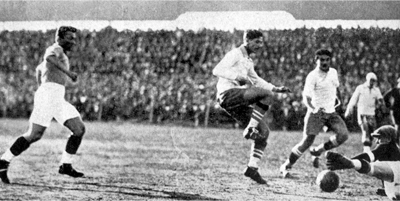

A primeira partida
Primeira partida
A primeira partida de futebol aconteceu em 19 de dezembro de 1863, em Londres, Inglaterra. Organizada pela recém-formada Football Association, a partida foi jogada por duas equipes de 11 jogadores cada. As regras eram simples, sem um árbitro formal. A atmosfera era de curiosidade e entusiasmo. O placar final é desconhecido, mas essa partida pioneira marcou o início do futebol como conhecemos. Desde então, o esporte evoluiu globalmente, mas a emoção e a essência do jogo permanecem, destacando o poder unificador do esporte.
Primeira bola
Esta foi a primeira bola de futebol. A história da primeira bola de futebol remonta ao século XIX, quando o esporte estava em desenvolvimento. Inicialmente feitas de materiais improvisados, como bexigas de animais, as bolas eram inconsistentes. A invenção da borracha vulcanizada por Charles Goodyear permitiu maior durabilidade e uniformidade. Com a padronização das regras após a fundação da Football Association (FA) em 1863, as bolas evoluíram tecnologicamente ao longo do tempo, refletindo a paixão global pelo futebol.
Maracanã
Um dos estádios mais tradicionais do futebol, O Estádio do Maracanã, situado no Rio de Janeiro, Brasil, é uma joia arquitetônica e esportiva inaugurada em 1950 para a Copa do Mundo. Com capacidade para mais de 78 mil pessoas, o Maracanã testemunhou eventos memoráveis, como a final de 1950 e a Copa do Mundo de 2014. Além do futebol, o estádio abriga diversos eventos culturais, destacando-se pela arquitetura modernista e pela estátua de Pelé. Mais do que um local esportivo, o Maracanã é um símbolo da paixão brasileira pelo futebol e um espaço multifuncional que transcende sua função original.